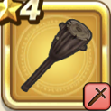

ギガンテスの棍棒
攻略班 5.5点 / ギガンテスの一撃
くわしい特徴
【レベル別習得スキル】 Lv1ギガンテスの一撃（消費MP：7）失敗しやすいが敵1体に35%の確率で斬撃ダメージの会心の一撃を与える。こころや心珠で会心率を上げても影響を受けない。 Lv20会心率+1% Lv28ギガンテスの一撃のダメージ+100% Lv36攻撃時+2%の確率で転びを与える Lv40会心率+1% 【限界突破スキル】 1凸スキルの斬撃・体技ダメージ+3% 2凸スキルの斬撃・体技ダメージ+3% 3凸スキルの斬撃・体技ダメージ+3% 4凸スキルの斬撃・体技ダメージ+3%